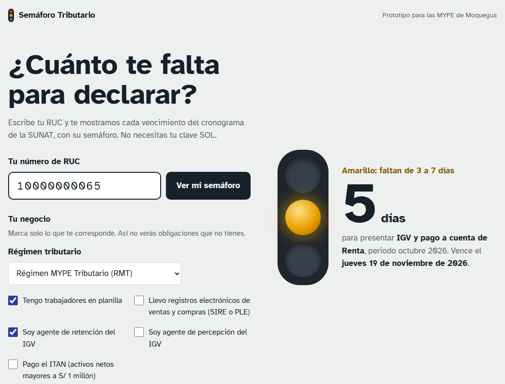
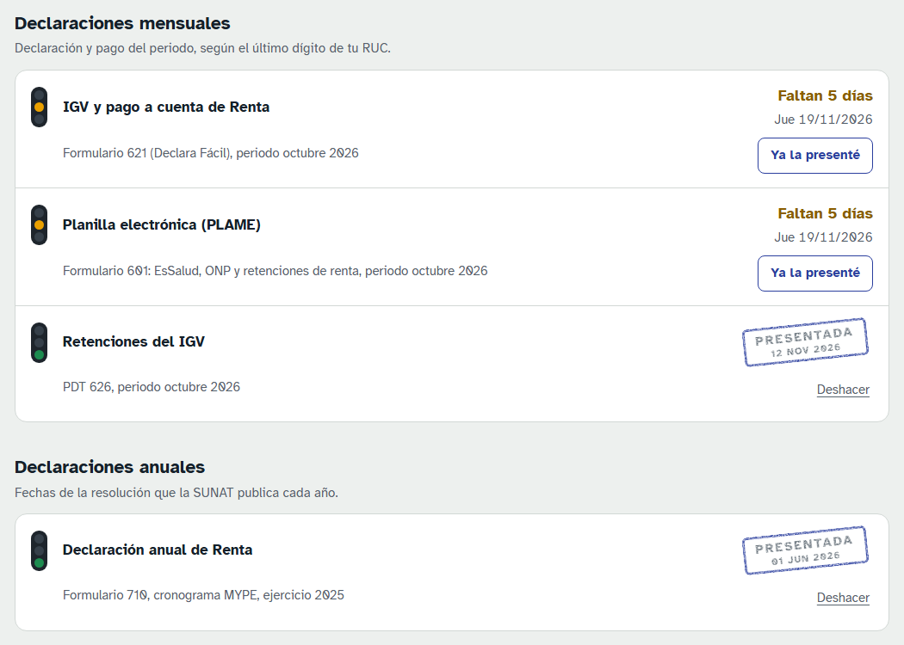
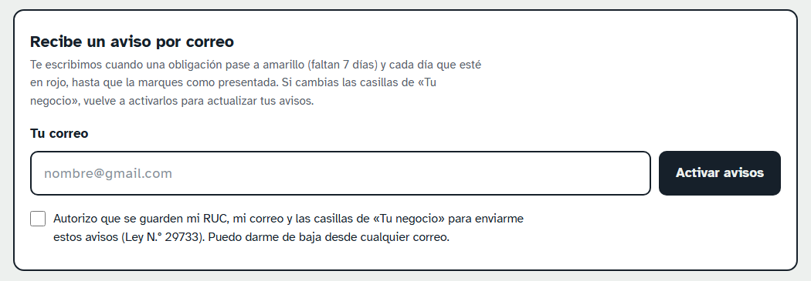

Manual de uso
Cómo saber cuántos días te quedan para cada declaración ante la SUNAT y recibir avisos por correo antes de que venza el plazo.
Dirección de la página: proyectosemaforotributario-oss.github.io/semaforo-tributario
También puedes entrar escaneando el código QR del afiche con la cámara de tu celular. No necesitas instalar nada ni crear una cuenta, y nunca te pediremos tu clave SOL.
Escribe tu RUC y marca tu negocio
Escribe los 11 dígitos de tu RUC y pulsa Ver mi semáforo. Si te equivocas en un dígito, la página te lo dice.
En Tu negocio elige tu régimen y marca solo lo que te corresponde. Así no verás obligaciones que no tienes:
- Tengo trabajadores en planilla: agrega la PLAME.
- Llevo registros electrónicos: agrega los registros de ventas y de compras (SIRE o PLE).
- Agente de retención o de percepción del IGV: agrega esas declaraciones.
- Pago el ITAN: agrega sus cuotas, de abril a diciembre.
La página recuerda estas casillas para tu RUC en ese celular o computadora.
Lee tu semáforo

El semáforo grande te muestra cuántos días faltan para el vencimiento más cercano que todavía no marcaste como presentado.
- Verde: faltan más de 7 días.
- Amarillo: faltan de 3 a 7 días. Prepara tu declaración.
- Rojo: faltan 2 días o menos, o ya venció y no lo marcaste.
- Gris: la SUNAT todavía no publica la fecha (por ejemplo, la declaración anual del próximo año).
Debajo aparecen el nombre de tu empresa y el estado de tu RUC según el padrón de la SUNAT. Si tu RUC figura de baja o tu domicilio como no habido, verás un aviso en rojo: consulta a tu contador.
Las fechas se calculan en días hábiles, igual que el cronograma de la SUNAT. Si una fecha dice provisional, es de un año cuyo cronograma la SUNAT aún no publica.
Marca lo que ya presentaste

Cuando declares, pulsa Ya la presenté en esa obligación. Aparecerá el sello PRESENTADA con la fecha, y esa obligación deja de contar para el semáforo grande y para los avisos.
Si te equivocaste, pulsa Deshacer. La próxima vez que entres con tu RUC verás lo que marcaste, desde cualquier celular o computadora.
La página no se conecta con tu Clave SOL, así que no comprueba con la SUNAT si declaraste: la marca es tu propia confirmación. Revisa tu constancia de presentación en SUNAT Operaciones en Línea.
Activa los avisos por correo

- Escribe tu correo, marca la casilla de autorización y pulsa Activar avisos.
- Revisa tu bandeja (y la carpeta de spam): te llega un correo «Confirma tus avisos».
- Pulsa Confirmar avisos y, en la página que se abre, otra vez el botón. Debe decir «Avisos activados».
Cuándo te escribimos
- Una vez, cuando una obligación pasa a amarillo (faltan 7 días o menos).
- Cada día, a las 8 a. m., mientras esté en rojo, hasta que la marques como presentada (como máximo 5 días después de vencer).
Cada correo trae botones para marcar la obligación como presentada, ver tu semáforo o dejar de recibir avisos.
Si cambias las casillas de Tu negocio (por ejemplo, contratas trabajadores), vuelve a pulsar Activar avisos con el mismo correo para actualizar lo que te avisamos.
Si eres contador
Puedes usar el semáforo para cada cliente: escribe su RUC, marca sus casillas y activa los avisos con tu correo. Recibirás un aviso por cada RUC. Repite el paso 4 para cada cliente.
Preguntas frecuentes
- ¿Cuesta algo?
- No. Es un prototipo académico gratuito.
- ¿De dónde salen las fechas?
- Del cronograma de obligaciones mensuales de la SUNAT (Resolución de Superintendencia N.° 000281-2022/SUNAT): vencen entre el 11.° y el 16.° día hábil del mes siguiente, según el último dígito del RUC. Los registros electrónicos vencen un día hábil antes. La declaración anual usa las fechas que la SUNAT publica cada año.
- ¿Qué datos guardan y para qué?
- Tu RUC, lo que marcas como presentado y, solo si activas los avisos, tu correo y las casillas de tu negocio. Se usan únicamente para mostrarte tu semáforo y enviarte los avisos (Ley N.° 29733). Puedes darte de baja desde cualquier correo.
- ¿Sirve para buenos contribuyentes o entidades del sector público?
- No. Este prototipo usa el cronograma general. Si figuras como buen contribuyente, la página te lo indica.
- No me llega el correo de confirmación.
- Revisa la carpeta de spam o de promociones. Si no aparece en unos minutos, vuelve a pulsar Activar avisos.
- La página no abre.
- Comprueba tu conexión a internet y escribe la dirección completa. Si sigue sin abrir, prueba en otro navegador o en una ventana privada.
Declarar fuera de plazo puede costar una multa de hasta 1 UIT (S/ 5 500 en 2026), además de intereses. El semáforo te ayuda a recordarlo, pero no reemplaza la asesoría de tu contador. Confirma siempre las fechas en sunat.gob.pe.